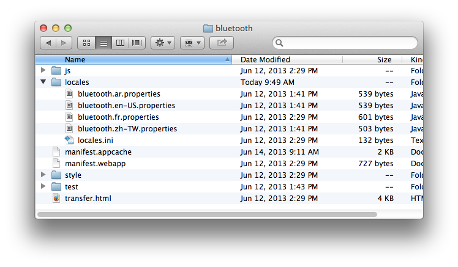

Firefox OS Apps 現正於全世界刮起旋風 ─ 西班牙、波蘭、哥倫比亞、委內瑞拉，還有更多國家會跟進。所以你也該讓自己的 Apps 擁有不同語言了。本著Open Web 的開放特性，同樣有許多框架與技術可翻譯 Apps。像 Jed 提供的 Gettext-style 函式庫就是常見工具。而許多開發中的新翻譯平台亦可擴充現有函式庫的功能。Mozilla 現正執行 Localization 專案，將透過多樣的新編譯功能而延伸 L10n 的範圍。你可加入「Tools 群組」進一步了解。
本篇將透過目前已佈署於 Gaia 階段的函式庫，完成 Firefox OS Apps 的多語翻譯程序。由於 Gaia 已包含 Firefox OS 內建的所有 Web Apps，當然也包含電話撥號 (Dialer) 與聯絡人資訊管理 (Contacts Manager) 功能，因此 Gaia 就是絕佳的模擬模型。若要使用 Gaia 進行模擬，就必須先知道函式庫的某些功能並無法相容跨瀏覽器的環境 (例如 l10n_date.js 即使用非標準的 toLocaleFormat 函式)。當然，未來 Gaia 亦將朝 L20n 邁進。
L10n.js
目前 Firefox OS Gaia 則使用 Fabien Cazenave 提供的 L10n.js 函式庫修改版本，可翻譯 Firefox OS 中的預設 Apps。另可於 Gaia 的原始碼中找到此函式庫。此函式庫是以屬性格式的鍵 (Key)/值 (Value) 為基礎。L10n.js 剖析器 (Parser) 亦可支援匯入規則，以利於用戶端選擇語言。預設 Gaia Apps 將以 ini 檔案指定翻譯檔案，並以鏈結標籤的方式載入 ini 檔案。
這裡以檔案傳輸用的 Bluetooth App 為例，其語系檔 (Properties file) 的結構則如下圖所示：

此 App 包含 4 種語言 (ar、en-US、fr、zh-TW) 的語系檔。而部分的 en-US 語系檔另列於下：
bluetooth = Bluetooth
confirmation = Confirmation
bluetooth-status-description = Bluetooth is disabled
turn-bluetooth-on = Do you want to turn Bluetooth on?
cancel = Cancel
turn-on = Turn On
123456
bluetooth = Bluetoothconfirmation = Confirmationbluetooth-status-description = Bluetooth is disabledturn-bluetooth-on = Do you want to turn Bluetooth on?cancel = Cancelturn-on = Turn On
如你所見，這些都是簡單的鍵/值語系檔，並包含可翻譯的字串。所有檔案均儲存於 Bluetooth App 的「locales」目錄中。此外，該資料夾亦具備 locales.ini 檔案，內容如下：
@import url(bluetooth.en-US.properties)
[ar]
@import url(bluetooth.ar.properties)
[fr]
@import url(bluetooth.fr.properties)
[zh-TW]
@import url(bluetooth.zh-TW.properties)
12345678910
@import url(bluetooth.en-US.properties) [ar]@import url(bluetooth.ar.properties) [fr]@import url(bluetooth.fr.properties) [zh-TW]@import url(bluetooth.zh-TW.properties)
此 ini 檔案即根據 Apps 使用者的語言，指定所應載入的語系檔；且該 ini 檔案亦列出所有可支援的多國語言。且在此範例中，如果未提供使用者所屬的語言，則 en-US 語系檔將為預設語言。透過下列鏈結標籤的語法，即可載入此 ini 檔案。
<link rel="resource" type="application/l10n" href="locales/locales.ini" />
1
<link rel="resource" type="application/l10n" href="locales/locales.ini" />
若「rel」屬性設為「prefetch」，即可預先載入 ini 檔案而提升效能。
L10n 元素屬性
接著新增 1 組 data-l10n-id 屬性 (語系檔中所定義的鍵值)，藉以定義需翻譯的元素。若以需要翻譯的標頭為例，應如下列：
<h2 data-l10n-id="label1">Label One</h2>
1
<h2 data-l10n-id="label1">Label One</h2>
屬性「label1」的值，即作為語系檔中的鍵值。而透過參數替換 (Argument substitution) 與複數巨集 (Plural macro)，即可於語系檔中建立複雜字串。
參數替換
用雙大括弧包住參數 ─ 如 {{arg}} ─ 即完成參數替換。另透過如下的類似語法，亦可針對特定使用者而自訂訊息：
loginmessage = Hello {{user}}, glad you decided to visit
1
loginmessage = Hello {{user}}, glad you decided to visit
而透過 data-l10n-args 屬性，亦可設定參數的預設值。此屬性本為 JSON 格式的預設數值。在上述範例中，另可使用下列 HTML 設定使用者參數的預設值：
<h2 data-l10n-id="label1" data-l10n-args='{ "user": "Guest" }'>Label One</h2>
1
<h2 data-l10n-id="label1" data-l10n-args='{ "user": "Guest" }'>Label One</h2>
複數巨集
根據參數值，可透過複數巨集來自訂訊息。此巨集將使用 1 組數字數值並回傳 zero、one、two、few、many、other 等值。根據傳入的數值與目前 Unicode Plural Rules 的不同，其回傳值亦將有所差異。舉例來說，針對 en-US 所自訂的郵件訊息可能如下：
mailMessage = {[ plural(n) ]}
mailMessage[zero] = you have no messages
mailMessage[one] = you have one message
mailMessage[two] = you have two messages
mailMessage[other] = you have {{n}} messages
12345
mailMessage = {[ plural(n) ]}mailMessage[zero] = you have no messagesmailMessage[one] = you have one message mailMessage[two] = you have two messages mailMessage[other] = you have {{n}} messages
<h3 data-l10n-id="mailMessage" data-l10n-args='{ "n": "1" }'>Mail Message</h3>
1
<h3 data-l10n-id="mailMessage" data-l10n-args='{ "n": "1" }'>Mail Message</h3>
《未完待續》
原文鏈結：https://hacks.mozilla.org/2013/08/localizing-firefox-os-apps/